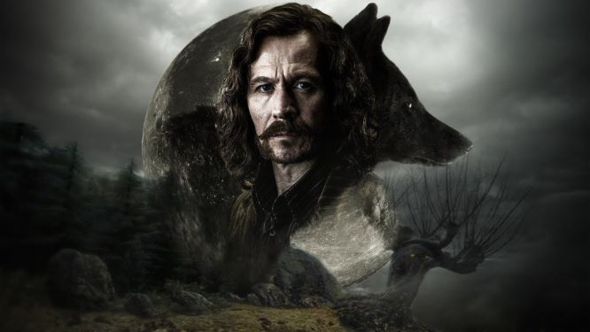

|  |
sirius Black and his tragic taleEldest son of the proud noble family of Black ,james potter freind and a member of the order of the phoenixe sirius has been wrongly convicted of murder of 20 muggle and peter petegrou ,sirius was held in azkaban for 12 years |
Sirius Black, a wizard who was imprisoned for murder, has escaped Azkaban Prison. Black is believed to be so dangerous that even Muggle TV news reports are issuing warnings about a dangerous fugitive. When Harry storms out of the Dursleys' house following an argument, he notices an ominous-looking large black dog watching him in the street. In Diagon Alley, Harry overhears Arthur and Molly Weasley discussing Sirius Black, a suspected Voldemort supporter who escaped solely to find and murder Harry. Later, Mr. Weasley asks a rather bemused Harry to promise not to look for Black.
Black breaks into Hogwarts on Hallowe'en, but when the Fat Lady bars him from entering the Gryffindor common room (he does not know the password), he slashes her portrait and escapes. Shortly after, in Potions class, Draco Malfoy taunts Harry about never seeking revenge on Sirius Black, though Harry is confused about what he means.
Just before Christmas, Harry overhears a conversation in the Three Broomsticks pub that Black betrayed James and Lily Potter to Voldemort, and afterward murdered their friend, Peter Pettigrew, along with twelve Muggle bystanders. Harry is shocked to learn that Black is also his godfather. Enraged, Harry vows to avenge his parents' deaths. Soon after, Black slips into the Gryffindor common room using Neville Longbottom's lost password list. He shreds Ron's bed curtains with a knife, but flees when Ron wakes up screaming. It is as yet unclear why Black attempted to attack Ron rather than Harry.
|
|